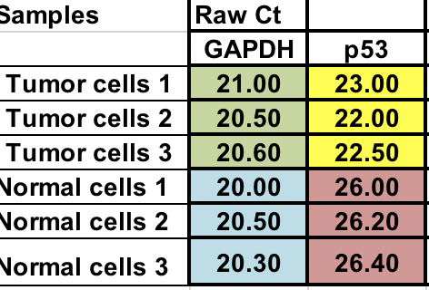
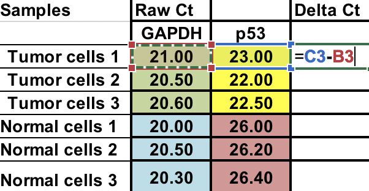
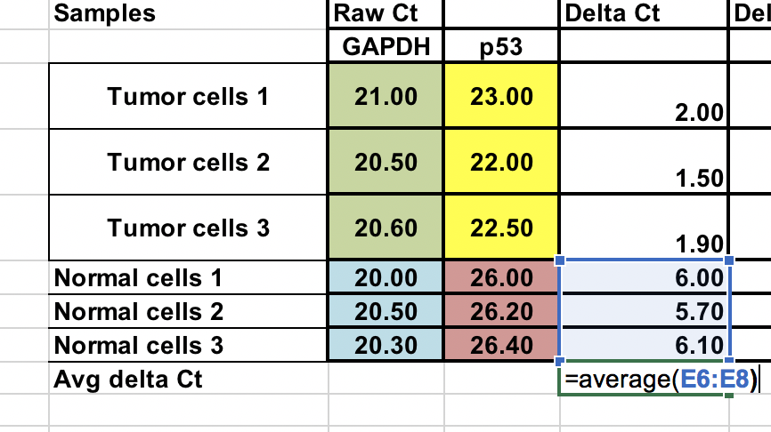
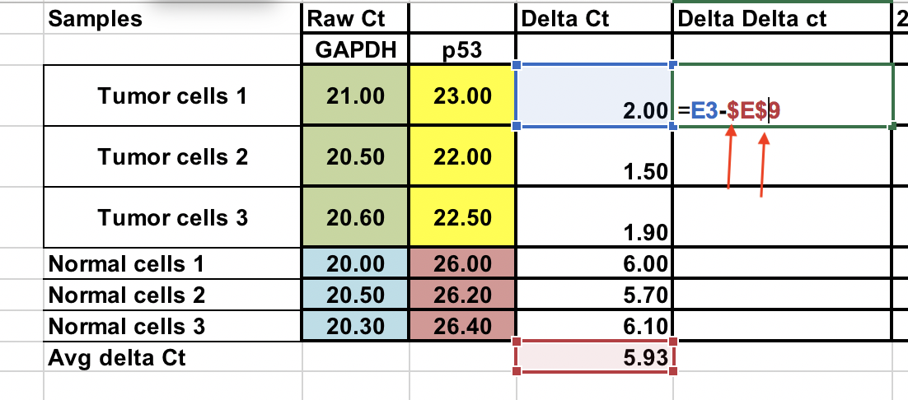
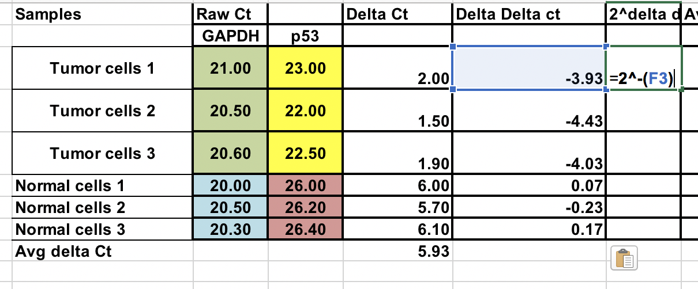
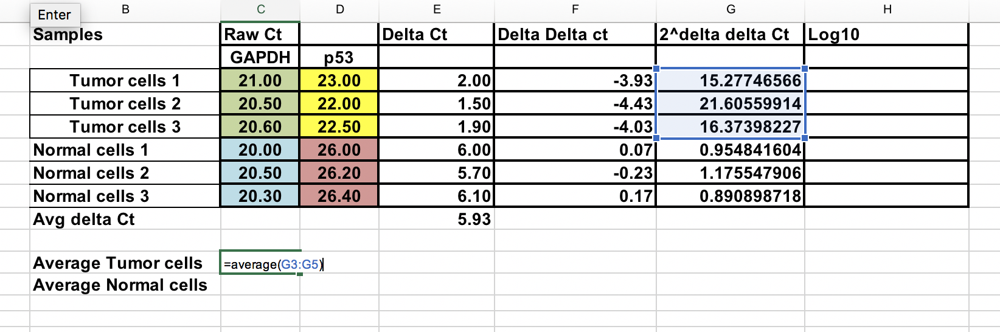
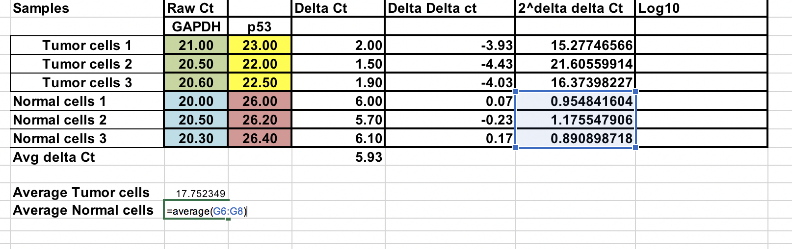
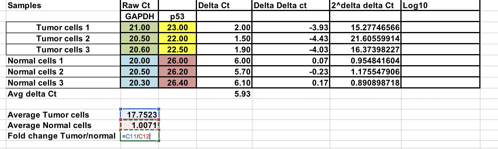
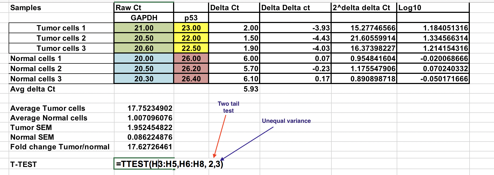
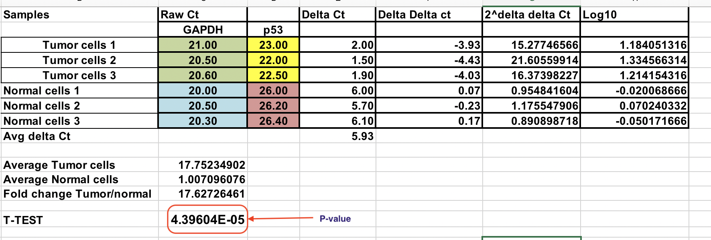

The Delta-Delta Ct Method¶
Delta-Delta Ct method or Livak method is the most preferred method for qPCR data analysis. However, it can only be used when certain criteria are met. Please refer the lecture notes to make sure that these criteria are fulfilled. If not, more generalized method is called Pfaffl method. Please read the additional reading material to get more information about this method.
Here are the steps for Livak method:
The Excel file with all the calculation are in the qPCR analysis folder on Blackboard.
You have raw Ct (number of cycles that takes to reach threshold) for normal and tumor cells (3 replicates for each).

Normalization¶
First, you will need calculate relative difference between the gene of interest (p53) and the house keeping gene (GAPDH).
∆Ct = Ct (gene of interest) – Ct (housekeeping gene)

Average of the control samples (normal cells)¶
As we compare our tumor (treatment) to control (normal cells), first we need to average the ∆Ct for the 3 control (normal) samples.

Calculate the ∆∆Ct relative to the average of ∆Ct normal cells¶
∆∆Ct = ∆Ct (Tumor sample) – ∆Ct (normal average)
You can do this normal samples as well. Use $ signs infront of column number and raw letter (arrows) to fix the cell.

Fold gene expression for each sample¶
Make sure you raise the negative ∆∆Ct to power of two.
Fold gene expression = 2^-(∆∆Ct)

Overall fold change¶
You can calculate average fold change for both tumor and normal samples. Ratio between these two the fold change between tumor and normal samples.

Log transformation¶
To perform parametric statistical tests such as T-test, it advised to transform the final gene expression results to log values (any log base). This would make data distribution symmetric.
Here we have change the 2^-(∆∆Ct) to log 10.

T-test¶
Need to be careful when using parametric tests if data is not normally distributed, it would lead to erroneous conclusions.
Select log 10 of 2^-(∆∆Ct) values for Normal and tumor samples as indicated. Use two tail test (number 2) and assuming unequal variance (3).
Resulting P value is less than 0.05 and therefore, we reject the null hypothesis and two sample means are significantly different at 0.05 level.
